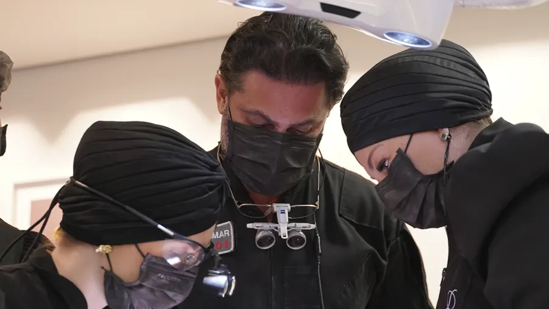

Isso não é um curso. É uma imersão dentro de uma clínica real.

Paciente ao vivoDiagnóstico e mockup em tempo real
Sistema de consultaDo diagnóstico à decisão
Fluxo digital + IADSD e DREAMS Protocol™
Aplicação imediataPara usar no dia seguinte